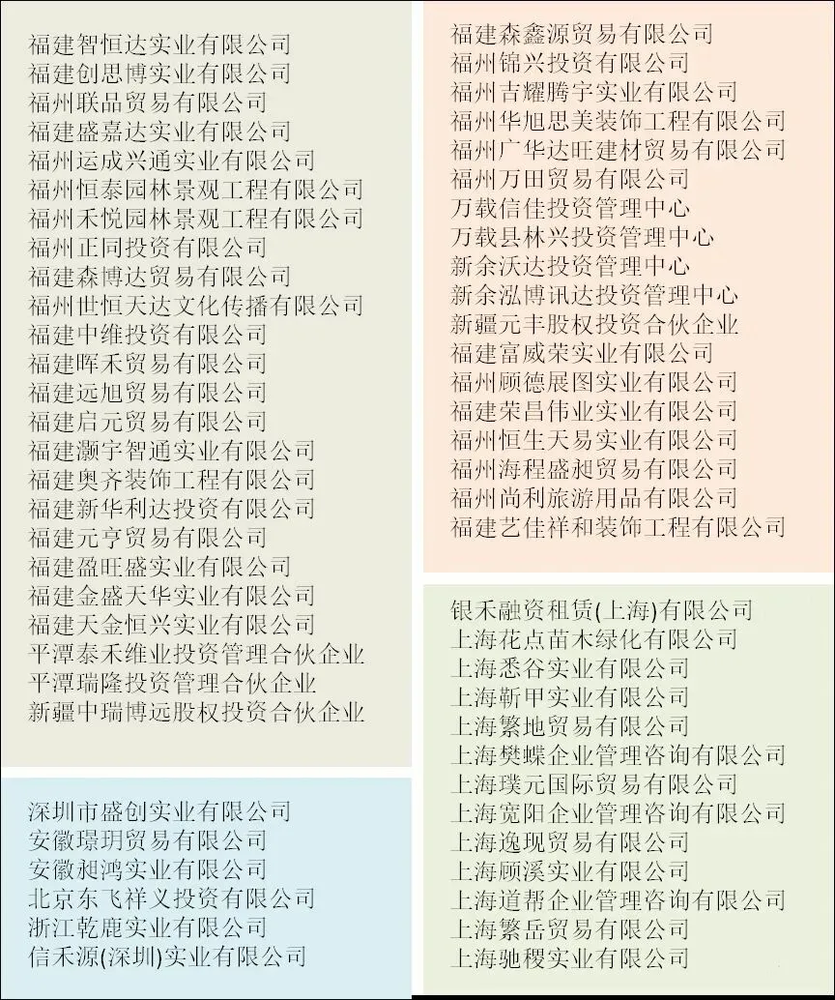

泰禾必须倒房地产才能活
泰禾必须倒，房地产才能活
前两天，和银行的朋友一起去做业务对接，结果，变成了泰禾债权人吐槽大会。
论证了半天，得出一个结论：泰禾必须倒，房地产行业才能活。
一直以来，我们再三提醒，泰禾已无力扭转乾坤，疫情只不多是个背锅侠。就算没有疫情，泰禾内外部的情况迟迟未改善，出现目前这种状况，也只是时间问题罢了。
下面，逐一说道，如果有不实的地方，欢迎泰禾发律师函。对了，别像上次一样以合作来再三公关，不缺那点钱，况且，君子爱财，取之有道。
** 壹 **
先从泰禾一直自我标榜的品质说起。
首先，得承认泰禾在2017年1月之前的建筑品质和物业服务品质。彼时的泰禾，建筑独树一帜，也有匠心精神，品质可列行业百强房企前五。
但2017年1月之后的泰禾，早已变味，人才高周转，建筑高周转，导致后来的泰禾产品，为了院子而院子，随便拿一块地，就冠名XX院子。院子成了烂大街的产品。
高周转，减配，也导致了后来的房子交付，饱受质量问题的维权之苦。今年初，又新增了逾期交房的维权，泰禾在全国各地多个项目因未能如期交付房屋，爆发业主维权。
这时候的泰禾是怎么处理的呢？让某个自媒体写了一篇稿，说是因为不减配导致逾期交房。见过不要脸的，没见过这么不要脸的。
有意思的是，泰禾很注重舆论导向，每年在媒体上投放巨资，维护品牌，控制负面舆论。一些媒体也是没节操，有奶便是娘，给了费用，死的都能给你说成活的。
翻看了几个自媒体的文章，清一色收了费在试图洗白的。
天机曾是绿城粉（现在绿城也扑街了），绿粉们曾点评过泰禾的产品。泰禾的院子产品，更受土豪和暴发户的喜爱，适合2014年之前的市场购房者心态和品味。
** 贰 **
再说说泰禾的装逼式作为。
第一个，大肆抢地，高价收并购（拍地）。从南京青龙湖，到漳州三项目，从天津金樽府，到深圳地王项目等等，都是以高于市场价一大截的价格获取的。
后来呢，南京青龙湖几乎要烂在手里，花七八百万年薪挖来的体制内官员到公司任职，也解决不了规划问题；
天津金樽府一把大火造成多人死亡，多个家庭破碎，泰禾由此走下坡路；
深圳地王项目，地价比周边房价还贵一大截，一颗受精卵都变成幼儿园中班的小朋友了，还不见泰禾开售。这项目也是泰禾寄希望销售回款填补债务窟窿的最大底气。
这类项目，都被泰禾称为优质土储......难怪融创看完掉头就走，世茂挑挑拣拣后，剩下的，再也难有房企看上了。一堆连债权人都嫌弃的项目。
泰禾最喜欢的就是装有钱，即使是在最窘迫的时候。以至于黄董事长在投融资圈有个雅号：逼王。这类装逼的黑历史，读者有兴趣可以自行去查看，太多了，这里就不展开了。
约一个多月前，泰禾说自己不裁员、不减薪。话音未落，好些员工就被裁，他们不是泰禾员工？不减薪，但是拖薪、欠薪啊，好多员工4、5、6月份的工资还没发呢。
上次股价被拉涨，然后第二天员工3月份的工资就发了。这次股价被拉涨，员工4、5、6月份工资还不发？
** 叁 **
既然说到了股价，就得说说资本市场了。
个人认为，与其说黄其森是做开发商的，不如说他是做资本市场的。喊话2000亿拉升股价；碰瓷建发、国贸、金茂、万科，然后又被一个个打脸，为保股价，一个又一个烟雾弹，真乃股市奇观。
对于外界来说，泰禾真实占股比例多少，是个谜团。
因为，泰禾的影子公司太多了， 并在泰禾各种资本运作中频频出现 。
影子公司，它的自然人股东并不是公司的真正掌控人，只是一群代持者。这样的公司不在上市公司的体系中，也不被背后真正的老板所承认。
影子公司存在的价值，就是协助大股东完成一些隐秘的运作，包括拉升股价。
2018年，失火造成多人死亡的天津泰禾金樽府项目，同年3月，泰禾公告称，已将项目公司天津泰禾锦辉置业的股权和债权转让福建森鑫源贸易有限公司，该项目已和泰禾完全没有关系，试图进行风险隔离。
森鑫源，2017年成立，黄家兆和黄朱金分别持有90%、10%股权，明面上看，确实和泰禾没有任何关系。
但深挖之下可以发现，联系方式与2015年成立的泰禾旗下泰禾金控（平潭）集团有限公司的联系方式完全相同。
而泰禾金控上市公司持有49%股权，大股东黄其森的泰禾投资持有51%股权。
如此看来，风险并未被隔离，只是被隐藏了。项目也只是从左口袋上市公司赚到了右口袋马甲壳公司。
以下影子公司，它们的背后都是一群毫不知名、各不相干的自然人股东，但他们又都有一个共同点，他们在工商局备案时留下的联络人姓名与联系方式，与黄其森的私人公司泰禾(福建)集团有限公司完全相同。他们都是黄其森的马甲。

至于 实际控制人与上市公司之间资产腾挪 （掏空上市公司资产），天机曾多次提过。 碧桂园接盘、融创被罚、泰禾影分身 （可直接点击阅读）
不知道为什么，泰禾从不敢正面回复影子公司这事。
除了喊口号2000亿拉升股价，而泰禾和证监会一问一答的那些趣事，更是让路人看呆了。不公布销售额、屡次延期回复、遮遮掩掩的，上市房企中，独此一家。
泰禾集团借壳上市的，是福建三农，福建三农，是当年邱忠宝掏空的三家上市公司之一。 后来的邱忠 保 锒铛入狱，20年刑期。
** 肆 **
最后，泰禾最终走向何方？
很多项目的业主都在反馈，泰禾项目公司上的本该放在银行监管的钱，被挪走了。业主维权要求复工、债权人要求泰禾还钱，泰禾的各类公告中，就看出两个字：没钱。
好友吴中生说，就算泰禾破产倒闭，也不影响黄其森依然有钱，具体原因，参照上述影子公司的做法。
泰禾已到期未还债务270亿，今年到期债务555亿元，人家是666，你是555。有钱付吗？留给大家自行想象。
那些去年同意展期的债权人，如今哑巴吃黄连。
对于泰禾来说，最好的就是破产清算，特别是在之前未获得许可，如今已获得许可的情况下（本周内获得许可了，不久后应该公布消息了吧）。
这个时候了，还指望白衣骑士？你看孙宏斌看完就跑了。这个时候还有接盘的，估计也是脑子不清楚，应该叫白痴骑士。毕竟，泰禾的水深不见底，不像表面那么简单。
破产清算，重组，对于债权人、业主、员工，都是好事。
就拿业主来说，大量未交付，且交付日期遥遥无期的业主来说，首付款付了，房贷下来了，每个月都在按揭，但就是迟迟看不到自己的房子，无疑是很绝望的，真按揭，按在地上揭皮。
从业24载，房地产上市公司中，泰禾现象堪称第一奇景。
这类抬高地价、影子公司操纵资本市场、销售数据存疑、裁校招生、撒谎成惯性、睁眼说瞎话.、砸钱让媒体洗白、对业主耍无赖、拖欠大批合作方款项好几年.....的房企，堪称房地产行业的獐子岛。
试着想想，若其他房企也是泰禾这般作风和作为，整个行业将会是何等的乌烟瘴气。
这类劣迹斑斑的房企得到了该有的惩罚，房地产行业的歪风邪气得以遏制，这个行业才能有清风正气。
不同意？那好吧，祝你有一天成为泰禾的债权人，或者业主，又或者，员工。
点击文末左下角的“ 阅读原文 ”，可勾搭天机，防失联，看被删文章（在朋友圈）。提个醒，明天地产玄机有更新，内容是某大房企总裁被抓了，公众号上输入玄机，明早见。
公众号改版，将天机设为星标、常点文章右下角的“赞”和“在看”，可及时收到文章更新信息。

按日期浏览全部来源（同日按条目标识排序）